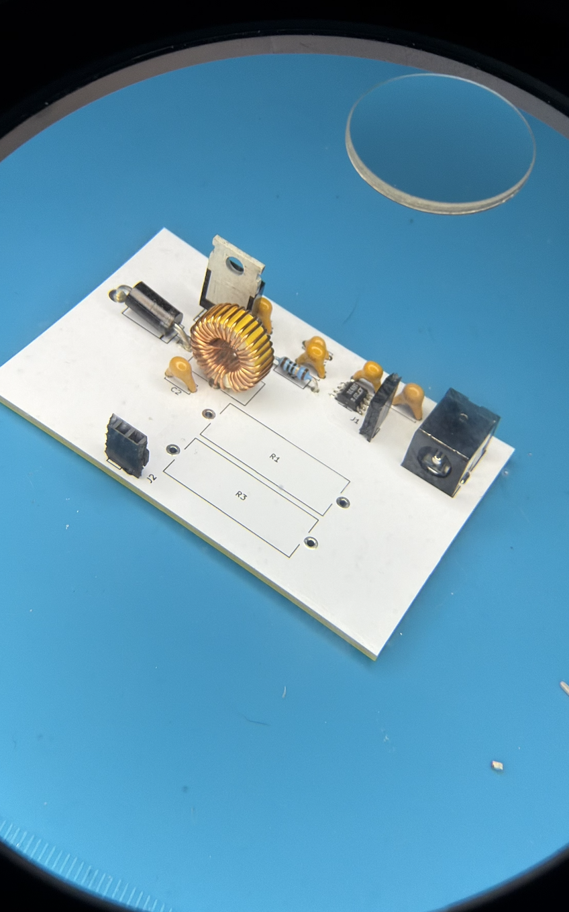

DC–DC Buck Converter with PID Control
A 12V-to-5V, 2A synchronous buck converter with PID-controlled output regulation, plus a secondary voltage divider stepping the output down to 3.3V for MCU compatibility.
Click below to see the steps and flip cards →

Calculations
We started by defining our target specs: 12V input, 5V output, 2A output current, and a 100 kHz switching frequency based on research into similar buck converter designs. I calculated the duty cycle and then sized the inductor and output capacitor to meet our target ripple. I also determined the required MOSFET voltage and current ratings with a safety margin, selected a diode rated above our operating voltage and current, and chose a non-inverting gate driver IC (LTC1693-1) to drive the MOSFET from the PWM signal.
LTspice
Before starting the PCB layout, I simulated the circuit in LTspice to verify that it stepped 12V down to 5V under the target load. I used a pulse voltage source to model the PWM signal from the MCU and checked the high-side MOSFET's switching behavior. The simulation also confirmed why we needed a dedicated gate driver rather than driving the MOSFET directly.
KiCad schematic
Component selection followed directly from our calculations. For example, once we determined we needed a 10 µF capacitor, we selected a standard ceramic capacitor and used its default footprint. We selected most components using the same process.
KiCad PCB layout
We calculated trace widths based on the current each path would carry. The traces carrying the 2A output current were made wider to reduce heating, while lower-current traces were kept thinner. We used a full ground plane instead of routing individual ground traces to simplify the layout and reduce ground impedance. We also kept the switching components close together to minimize the loop area around the high-frequency switching node.
Fabrication and assembly
The bare boards were fabricated through JLCPCB. During assembly, we noticed that the white solder mask made the brown flux residue from hand-soldering much more noticeable. It wasn't a functional issue, but we cleaned the boards with isopropyl alcohol and a Q-tip after soldering to remove the residue.
Final wiring
With the boards soldered and cleaned, we wired the feedback resistors to the PCB using jumper wires because their physical size didn't match the footprints we designed. The rest of the circuit connected directly through the PCB, and we set up the input supply and probe points for bench testing.
MCU wiring with voltage divider
I soldered header pins onto the PCB to connect the MCU to the board. The MCU's PWM output fed into the PCB, while the buck converter's output was sent through a voltage divider back to the MCU to close the control loop. My teammate handled the direct MCU wiring while I focused on the PCB-side connections.
Oscilloscope reading
When we first probed the output, the voltage was lower than expected. Based on the LTspice simulation, we knew the output would initially oscillate before settling, so we allowed the circuit to stabilize. It settled at 3.21V compared with our 3.3V target. We traced the difference to the feedback resistor being mounted off-board rather than directly on the PCB. The additional wire length and parasitics affected the feedback signal and contributed to the lower output voltage.